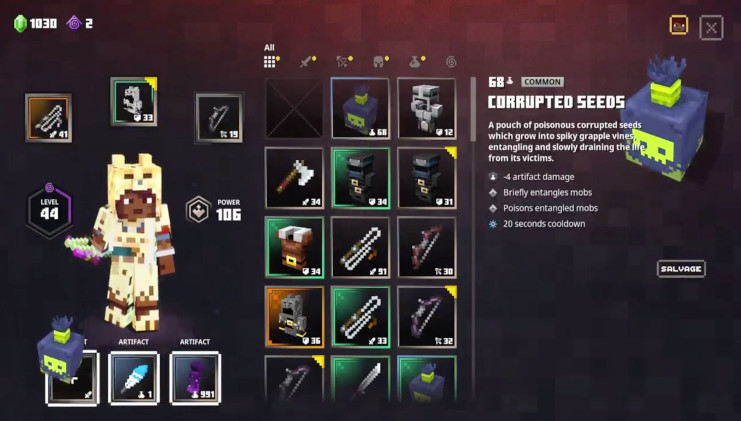

More adventures await in Minecraft Dungeons: Jungle Awakens, out now

The world of Minecraft seems to grow even bigger with each passing day. The main game recently got a new Nether update, and the action roleplaying spinoff that is Minecraft Dungeons now has its own update as well. Minecraft Dungeons: Jungle Awakens takes players to a new jungle area with adorable pandas and horrendous monsters. As such, it promises even more of that action found in the base game.
Welcome to the jungle
Minecraft Dungeons: Jungle Awakens sees the addition of three new story missions. Accompanying that is more gear to find as well, be that new weapons, armor, or artifacts. But first, you’ll need to best the new foes found in this new area. They are a result of the corruption by a mysterious power that has crash-landed in the jungle. The Leapleaf and Whisperer mobs are just a few of what to expect. Jungle Awakens will have you adventure through the three missions and find the source.
For players who already own the Hero Edition, Minecraft Dungeons: Jungle Awakens is already yours. Otherwise, the $10 Hero Pass is needed to access the DLC. This also marks the first of two planned DLCs coming to the game. So if you are invested, this is only just the beginning.
Free content for all
Together with the new DLC, Mojang Studios have also added more free content. With Minecraft Dungeons: Jungle Awakens, players can look forward to the new Lower Temple dungeon. This new secret mission will have more to do and even more loot to find. There is also a laundry list of tweaks and changes made to the game. These will affect many different abilities, as well as the quality of the overall game experience. For those asking for more than just Minecraft Dungeons: Jungle Awakens, the game’s official soundtrack is also available on Apple Music and Spotify.